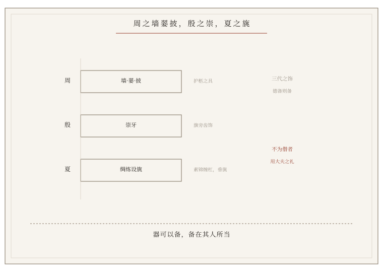

檀弓上 · 三·五十 · 第 253 课
孔子之丧，公西赤为志焉：饰棺墙，置翣，设披，设崇，绸练设旐。注「志谓章识」；疏「饰棺墙、置翣、设披，此皆周之法也」；「设崇牙，此则殷法」；「韬盛旌旗之竿以素锦、设长寻之旐，此则夏礼也」——「夫子虽殷人，兼用三代之礼尊之」。
说什么事：弟子为夫子办丧，把三代的葬饰都用上了。
落在哪一层：礼，兼及礼器与礼意。论「尊之者备」。
为何编在此位：上节论弟子之服，此节论弟子之饰。服以表哀，饰以章志。
【经】孔子之喪，公西赤為志焉。飾棺牆，置翣，設披，設崇，綢練設旐。
【注】公西赤，孔子弟子，字子华。志谓章识。墙之障柩，犹垣墙障家。墙，柳衣。翣，以布衣木，如摄与。披，柩行夹引棺者。崇牙，旌旗饰也。绸练，以练绸旌之杠，此旌葬乘车所建也。旌之旒，缁布广充幅，长寻曰旐。夫子虽殷人，兼用三代之礼尊之。
【疏】此一节论孔子之丧，送葬用三代之礼。孔子之丧，公西赤以饰棺荣夫子，故为盛礼，备三代之法，以章明志识。于是以素为褚，褚外加墙，车边置翣，恐柩车倾亏而以绳左右维持之，此皆周之法也。其送葬乘车所建旌旗，刻缯为崇牙之饰，此则殷法。又韬盛旌旗之竿以素锦，于杠首设长寻之旐，此则夏礼也。既尊崇夫子，故兼用三代之饰也。夫子用三代之礼不为僣者，用其大夫之礼耳；必用三代者，夫子圣人，德备三代文物故也。
为志 注「志谓章识」。为丧礼之标识。
墙 注「墙之障柩，犹垣墙障家」「墙，柳衣」。覆棺之柳。
翣 注「以布衣木」。形如扇，置车旁。
披 注「柩行夹引棺者」。以绳系棺，左右维持，防倾。
崇 注「崇牙，旌旗饰也」。刻缯为齿状，饰旗旁。
绸练 注「以练绸旌之杠」。以素练缠旗竿。
旐 注「旌之旒，缁布广充幅，长寻曰旐」。长八尺之旗。
孔子之丧，公西赤为他的丧礼立标识：饰棺以墙，车边置翣，设披以防倾，设崇牙以饰旗，用素练缠旗竿、竿头垂长寻之旐。
此节一「志」字提纲。志者章识，使人一见而知其为谁的丧。公西赤的做法是备三代之法：墙、翣、披为周，崇牙为殷，绸练设旐为夏。注一语收之：「夫子虽殷人，兼用三代之礼尊之。」疏又补一层：「不为僣者，用其大夫之礼耳」——所用者大夫之制，非天子之制；兼三代者，以德备三代之文物，非以位僣。此二句最要紧，不然则备三代言僣，礼意反晦。
第一层 志 注「志谓章识」。丧有服以别亲疏，有饰以别贵贱，皆所以使人识之。志者，不是自表，是使外人有据可识。
第二层 三饰之所属 周：墙（障柩）、翣（蔽车）、披（防倾）——皆护柩之具，故曰周法。殷：崇牙——旗旁之齿饰，殷以武受命，恒以牙为饰。夏：绸练设旐——素锦缠杠、垂八尺之旐，尚质而后渐文。
第三层 不为僣 疏辨此最精：三代之礼，唯天子备。而夫子用之不为僣者，所用者大夫之礼。盖同一礼器，其数有等；等在其数，不在其名。此解若不明，则「兼用三代」四字便成罪案。
第四层 德备三代 疏「夫子圣人，德备三代文物故也」。此语把「礼器」与「德行」打通：器可以借，德不可借。其人足以当之，则器不虚设。
与今日何干 丧仪、纪念、称号——凡以「志」人者，其规格是给人的，不是给人的心。此节给的尺是：可以备，但不可僣；所备者在其人之所当，不在其欲。
| 左 | 右 |
|---|---|
| 为志 | 章识，使人可识 |
| 饰棺墙、置翣、设披 | 周法（护柩之具） |
| 设崇 | 殷法（旗旁齿饰） |
| 绸练设旐 | 夏法（素锦缠杠、垂旐） |
| 兼用三代 | 尊之者备 |
| 不为僣 | 所用者大夫之礼 |
| 德备三代文物 | 器可备，在其人所当 |
画一列出殡的车马于道上，视点略侧。柩车居中，棺上覆素帛，帛外加一层帷墙；车两侧各插一柄大扇（翣），扇面画云气；车前两侧有绳系棺，左右各一人执绳（披）。车后一竿高旗，竿上缠素练，竿首垂一条长幅，旗旁有齿状饰。道旁立数人。不写文字、不画人面细节。赭色只用在旗竿上的素练缠带与一扇的边缘。
